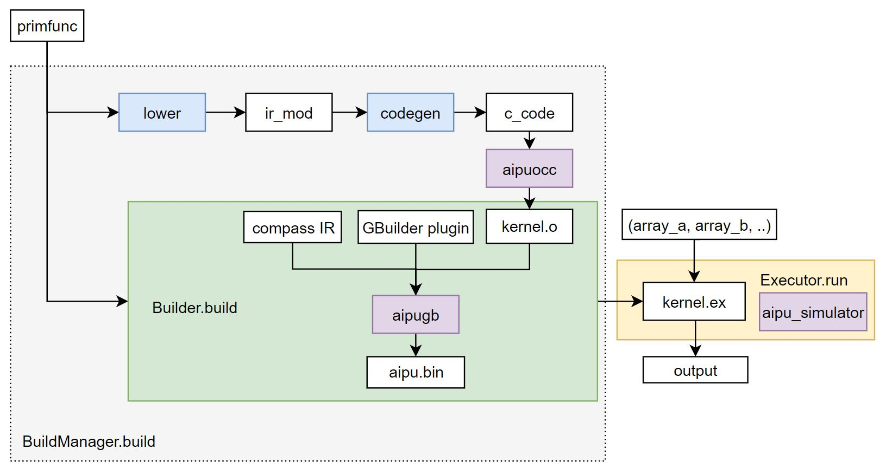

Build and Run Workflow
This tutorial explains the build workflow of Compass DSL.
What is BuildManager?
What happens in lowering stage?
What happens in Codegen stage?
What is Builder?
What is Executor?
Here is a simple example that shows how to use API to build and run the primfunc.
import numpy as np
from tvm import aipu
from tvm.aipu import script as S
dtype = "int32"
n = 8
@S.prim_func
def func(a: S.ptr(dtype, "global"), b: S.ptr(dtype, "global")):
va = S.vload(a)
vb = S.vadd(va, 1)
S.vstore(vb, b)
def test_func():
bm = aipu.tir.BuildManager(target="X2_1204") # What is BuildManager?
ex = bm.build(func) # What is the build workflow?
print(ex.c_code) # How Codegen works?
a = np.array(list(range(n)), dtype=dtype)
aipu_out = np.zeros((n,), dtype=dtype)
ex(a, aipu_out) # What is Executor?
print(a, aipu_out)
if __name__ == "__main__":
test_func()
General Build Workflow

The general build workflow is:
The primfunc function will be first lowered to a IR_Module.
The IR_Module will go through the codegen and generate the c_code.
The AIPU compiler will compile the c_code into an object file.
The builder.build will generate the compass_ir, and gbuilder_plugin with the primfunc_info, then call the aipugb to generate the aipu.bin.
The executor function is a runtime-module, which can be called directly with runtime arguments, run and get the outputs.
BuildManager
bm = aipu.tir.BuildManager(target="X2_1204")
The AIPU buildmanger is a user interface for DSL program compilation.
To declare a buildmanger, the target is required. The default target is “X2_1204”.
You can then call the lower or build method of bm:
mod = bm.lower(primfunc)
ex = bm.build(primfunc)
Lower
lowering: transform a program to a lower-level representation that is closer to the target.
In the lower stage:
Turn the input (
Union[tvm.te.Schedule, tvm.tir.PrimFunc, IRModule]) into IR_Module.Run a sequence of passes(transformations). Many of the transformations in lowering stage are target independent.
It also allows to configure transformation parameters before applying transformations.
Codegen
In the codegen stage,
Apply some target dependent passes(transformations).
Call the Codegen Module to translate the IR_Module into string c_code.
Builder
The Builder is responsible for building the DSL program during execution.
In the Builder.build stage:
Generate the compass_ir with primfunc_info
Generate the gbuilder op_plugin
Call aipugb to generate aipu.bin
Return the runtime_module
Executor
Executor is responsible for executing the DSL program. The main feature of executor is that it has the ‘call’ method, which means that it is callable.
In the Executor.run stage:
Get the executable packed function.
Convert the runtime input arguments from
np.arrayintotvm.nd.array.Run the compiled DSL program.
Convert the outputs from
tvm.nd.arraytonp.array.